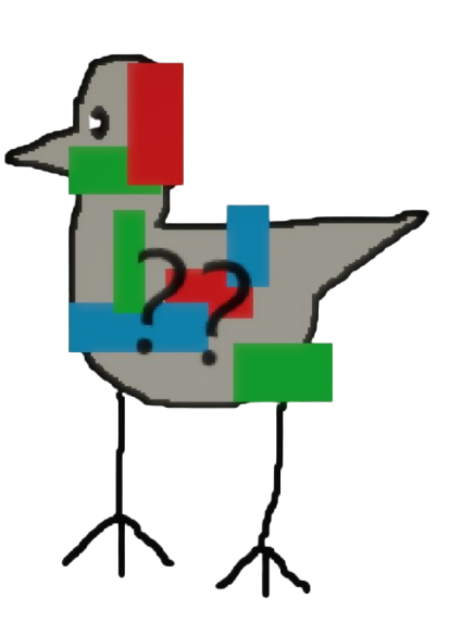

Overview

Glitch Brid is a Brid created by @LazerAmplified that was added on January 20, 2026.Obtainment
In the Glitch realm (see entrance on its page), go on top of the map, enable sprint and jump onto the floating RGB-colored bundle closest to spawn. It should be on the far side of the blue-colored part.
Trivia
- This Brid's hint reads 'Up in the sky.' and its description reads '*L̸̨̡̥̥̽̆͑̆o̷͉̻͇̬̿̔̚r̴̢̥̗͓̆̏ĕ̵̡̞̦̤m̶̠̳̩̽͝ ̵͖̙͇͇̓̍͂i̸̫̜̱̔p̵̰͎͙̹̒͠s̶̟̊ú̴̡̙͎m̸̡͕̭͆̏̏'
- This Brid is one of the first 25 Brids added to the game, being the seventeenth Brid.
- This Brid is the first Brid to be added to a subrealm. This, however, was not always the case. When the Glitch realm was only a subarea, Glitch Brid was one of the two Brids added before it was changed to a realm.